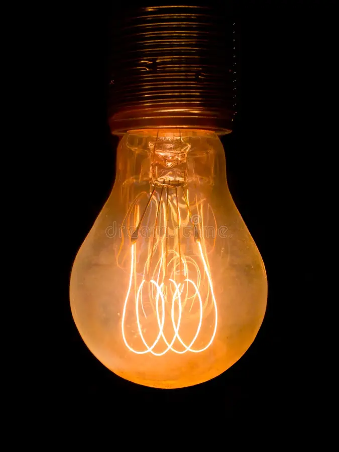

Пути обыкновенной лампочки в вашей люстре неисповедимы, как история ее создания. Потому что она — настоящее «дитя полка»: у нее много создателей, в том числе и наших соотечественников.
Началось все в 1840 году, когда британский астроном пропустил электрический ток через платиновую проволоку, помещенную в стеклянный цилиндр, и обнаружил, что она светится.
Потом был русский ученый Александр Милашенко, который в том же году начал разработку угольной нити. Потом — американец Джон Старр, получивший в 1844 году патент на электролампочку с угольной нитью. И понеслось: изобретение модифицировалось еще не раз, но все равно лампочки тех лет работали плохо и то и дело перегорали. Неудивительно, что среди изобретателей началась гонка — кто первым сделает долговечную лампочку.
Один из первых к «финишу» пришел российский инженер Александр Лодыгин, получивший патент на нитевую лампу в 1874 году. И только потом, уже в 1879-м, американец Томас Эдисон создал лампу со сроком службы 40 часов. Но наш ученый не сдавался и в 1890-х годах придумал несколько типов ламп с нитями из вольфрама и молибдена, а еще догадался закручивать их в виде спирали, чтобы лампа светила ярче, и откачивать из них воздух, чтобы светила дольше.
